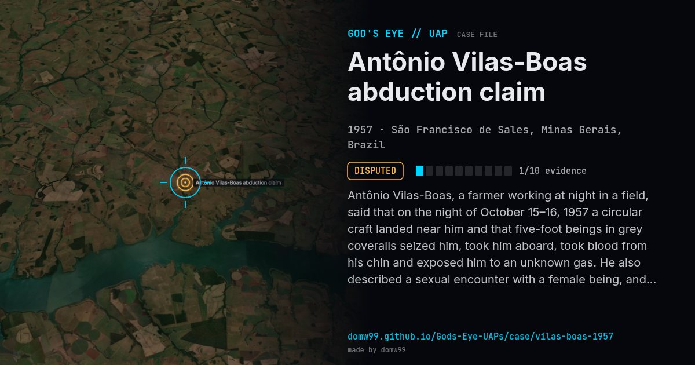

Antônio Vilas-Boas abduction claim

Antônio Vilas-Boas, a farmer working at night in a field, said that on the night of October 15–16, 1957 a circular craft landed near him and that five-foot beings in grey coveralls seized him, took him aboard, took blood from his chin and exposed him to an unknown gas. He also described a sexual encounter with a female being, and said the whole episode lasted about four hours. In February 1958 Dr. Olavo Fontes of Brazil’s National School of Medicine examined him and concluded he had been exposed to a large dose of radiation, with mild radiation sickness: pains, nausea, headaches, loss of appetite and skin lesions that appeared over the following months. It is often cited as one of the earliest well-known abduction stories, and it is widely doubted.
Explanation
It is one account by one man, first told months afterwards. The researcher Peter Rogerson doubts it, noting that a similar story ran in the magazine O Cruzeiro in November 1957, before Vilas-Boas first reported his, and arguing that he may have borrowed details from it and from the contactee George Adamski.
What was seen
Shape: Circular or egg-shaped craft with a rotating cupola
Witnesses: Antônio Vilas-Boas, a 23-year-old farmer (the only witness)
Duration: About four hours (as told)